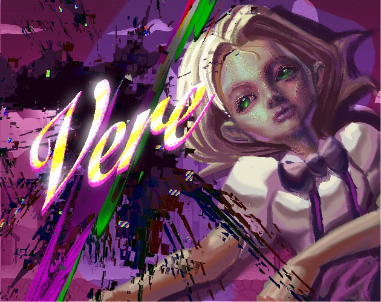
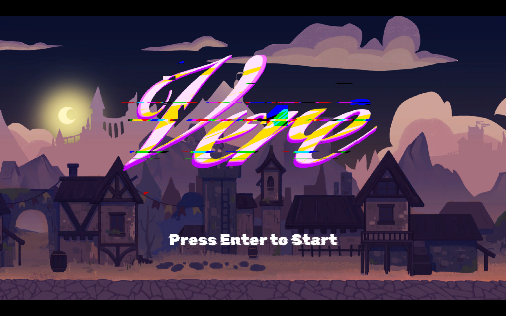

VERE
“Vere lives inside an Old Side-Scrolling RPG stored on a Forgotten Floppy Disk. As the disk decays, the boundary between the game world and the player interface starts to break. UI elements begin falling into the world, Glitch Holes open across the sky, and Vere is pulled deeper and deeper into a Broken World she does not understand.” “Vere 生活在一款被遗忘软盘中的老式横版 RPG 里。随着软盘逐渐损坏，游戏世界与玩家界面的边界开始破裂。UI 元素不断坠入世界，天空出现故障黑洞，Vere 被一次次拉进她无法理解的破碎关卡。”


Concept Development 概念发展
Game Jam ConstraintGame Jam 约束
This project was developed during a 42-hour game jam.这个项目在 42 小时 Game Jam 中完成。
The theme was Merge.主题是 Merge。
At the start, the team focused on what “merge” could mean beyond a simple mechanic.开始时我并没有先做完整剧情，而是先聚焦约束本身。
We explored how it could affect both gameplay and the world itself, instead of staying as a puzzle action or a visual trick.我希望主题同时影响机制与世界，不让 merge 只停留在简单解谜或视觉技巧上。
The goal was to let the theme shape how players understand and read the game space.这成为项目的核心概念。
Design Thinking设计思路
The discussion began with game perspective rather than specific mechanics.第一个清晰的想法不是机制，而是视角转换。
Instead of asking what objects should merge, we asked what kinds of boundaries could disappear.我没有问“什么物体要融合”，而是问“什么边界可以被打破”。
During this process, I proposed using UI as the starting point.这个问题把我带到 UI。
UI normally exists outside the game world and belongs to the player’s screen.UI 通常在世界之外，属于玩家屏幕。
I suggested merging the interface into the game environment itself.于是我决定把玩家界面和游戏空间直接融合。
The idea was quickly accepted and became the foundation for the project direction.这成为项目的核心概念。
Core Concept核心概念
From this point, the project was defined around a clear concept: UI becomes part of the environment.Vere 的核心概念是 UI as Environment。
Instead of staying on the screen, buttons, bars, and interface fragments appear inside the world as physical objects.按钮、条形元素、界面碎片和系统残片不再停留在屏幕上，而是作为实体进入世界。
This concept guided multiple parts of the project at the same time.这个想法从三个方向塑造了项目。
It defined how the game looks, how the space feels, and how the story is communicated through the environment.它塑造了视觉识别。
As a result, the world is no longer stable.它塑造了关卡氛围。
The boundary between system and environment is no longer clear.它塑造了环境叙事。
Design Direction设计方向
With the core concept established, the team expanded the direction together.核心概念明确后，我围绕它扩展整体方向。
If UI can enter the world, then the world itself should feel unstable and unreliable.如果 UI 可以进入世界，整个世界就应表现出不稳定。
Several directions were defined:环境应随着进度变得更难读懂。
The environment becomes harder to read over time.Glitch Holes 应把 Vere 拉向更深层的破碎空间。
Glitch holes pull Vere into deeper broken spaces, functioning as transitions between levels.视觉清晰度应逐步让位于失真。
Visual clarity gradually gives way to distortion.这为故事、氛围和视觉方向提供了稳定主线。
These decisions shaped both the narrative tone and the visual direction of the project.这为故事、氛围和视觉方向提供了稳定主线。
World Setup 世界设定
World Setup世界设定
Vere lives inside an Old Side-Scrolling RPG stored on a Forgotten Floppy Disk.Vere 生活在一款存放于遗忘软盘中的老式横版 RPG 里。
The game once had a stable world, readable space, and a simple daily rhythm.这个游戏原本拥有稳定世界、可读空间和简单日常节奏。
That stability matters because the rest of the project breaks away from it.这份稳定很关键，因为后续内容正是从这里开始偏离。
As the Forgotten Floppy Disk decays, the world starts to fail. Its space becomes unstable. Its sound becomes damaged. Its visual logic begins to collapse.随着遗忘软盘损坏，世界开始失效：空间不稳、声音受损、视觉逻辑坍塌。
Vere does not understand what is happening. She only sees that the world is changing and that familiar things no longer behave correctly.Vere 不理解正在发生什么。她只看到世界在变化，熟悉事物也不再按原本方式运作。
Environmental Storytelling环境叙事
The story is not told mainly through dialogue.这个故事并不主要依靠对白讲述。
It is told through the environment.它通过环境来讲述。
Falling UI fragments, broken music, duplicated visuals, Glitch Holes, and empty spaces all show the state of the world.坠落的 UI 碎片、损坏音乐、重复画面、Glitch Holes 与空白空间共同展示世界状态。
This approach fit the game jam scope. It also supported the main concept more directly.这种方式符合 game jam 范围，也更直接支撑核心概念。
The world itself explains what is happening.世界本身就在解释发生了什么。
Visual Direction视觉方向
After the world setup was clear, I helped define the Visual Direction.世界设定清晰后，我参与明确了视觉方向。
The world needed to feel like an old game that was slowly losing structure.世界需要呈现“老游戏正在逐步失去结构”的状态。
This led to several visual decisions.这带来了几项具体视觉决策。
UI fragments appear as physical level elements. Glitch Holes act as transitions and visual warnings. The environment becomes more blurred and unstable over time. Later spaces feel more distant, damaged, and emotionally cold than the early ones.UI 碎片成为关卡实体元素；Glitch Holes 作为过渡与视觉预警；环境随时间更模糊更不稳定；后期空间比前期更疏离、更破损、情绪更冷。
These choices supported both the story and the level atmosphere.这些选择同时服务了叙事与关卡氛围。
Environmental UI Ideas环境化 UI 想法
Based on this direction, our team developed several ideas for what UI could do inside the level.基于这个方向，我进一步设计了 UI 在关卡内的功能想法。
A pause button could become a physical object that stops environmental motion. A health bar could become part of gameplay space. Interface fragments could become platforms, obstacles, or visual markers. Broken UI pieces could guide the player or mislead the player.暂停按钮可成为可交互实体并停止环境运动；血条可进入玩法空间；界面碎片可作为平台、障碍或标记；损坏 UI 可引导也可误导玩家。
These ideas allowed Environmental Storytelling and gameplay function to support each other.这些想法让环境叙事与玩法功能形成互相支撑。
Player Experience Goal 玩家体验目标
The player should begin with curiosity.玩家体验应从好奇开始。
At first, the world still feels readable. The player sees strange changes, but the space is still understandable.前期世界仍然可读。玩家能看到异常变化，但空间依然可理解。
As the game continues, the player should feel less certain. The world becomes more damaged. The level becomes harder to read. The same systems feel less trustworthy.随着流程推进，玩家应逐步失去确定感：世界更破损、关卡更难读、原有系统更不可信。
By the end, the player should feel distance, instability, and quiet loss.到结尾时，玩家应感到距离感、不稳定与安静的失落。
The goal is not loud fear. The goal is a slow emotional drift from familiarity to disorientation.目标不是强烈惊吓，而是从熟悉到失向的缓慢情绪漂移。
Narrative and Gameplay Integration 叙事与玩法整合
UI elements exist directly inside the level as physical objects. UI 元素以实体物体形式直接存在于关卡中。
Buttons, bars, and interface fragments appear inside the space. Players can stand on them, trigger them, and use them to move forward. Interaction becomes slightly unfamiliar from the start, which creates a sense of uncertainty. 按钮、条形组件和界面碎片会出现在空间中。玩家可以站上去、触发它们，并利用它们前进。交互从一开始就带有陌生感，从而制造不确定性。
The opening uses a controlled camera to introduce the space as already unstable. Movement feels normal at first, but small inconsistencies begin to appear in layout and interaction. 开场通过受控镜头语言展示“空间已不稳定”。起初移动看似正常，但布局与交互中的细微不一致会逐步出现。
As players progress, the environment becomes harder to read. Shapes lose clarity. Platforms feel less reliable. The space starts to look distorted, and depth becomes harder to judge. 随着推进，环境会越来越难读。形状变得模糊，平台可信度下降。空间开始扭曲，景深也更难判断。
Visual glitches increase over time. UI fragments flicker, stretch, and break apart. These effects appear before the player fully understands the system, creating tension and unease. 视觉故障会逐步增强。UI 碎片闪烁、拉伸、破裂。这些变化会在玩家尚未完全理解系统前出现，制造紧张与不安。
Sound follows the same progression. Clear feedback slowly turns into noise. Music becomes less stable and more fragmented. Audio no longer fully matches what the player sees, which increases the feeling that the system is failing. 声音也遵循同样的递进。清晰反馈逐步变成噪声，音乐变得不稳定且碎片化。音画逐渐失配，强化“系统正在失效”的感受。
Vere shows small reactions during this process. These moments suggest awareness and reinforce that something is changing, not only in the world but in the character’s state. 在这一过程中，Vere 会出现细微反应。这些时刻暗示其自我意识，并强化“变化不仅发生在世界，也发生在角色状态中”。
Because the environment does not follow clear rules, players stop relying on familiar platforming logic. They begin to observe, test, and question each step. Movement becomes cautious. Curiosity replaces certainty. 由于环境不再遵循清晰规则，玩家会逐步放弃熟悉的平台跳跃逻辑，转而观察、测试并质疑每一步。移动更谨慎，好奇取代确定。
At the final moment, the player realizes that the space is no longer just a game world. The character appears on the player’s own desktop environment. The boundary between game and reality collapses. 在最终时刻，玩家会意识到这不再只是游戏空间。角色出现在玩家自己的桌面环境中，游戏与现实的边界被打破。
This shift creates a strong emotional impact. The player is no longer exploring a broken world. They are inside it. 这一转折会产生强烈情绪冲击。玩家不再只是探索一个破碎世界，而是置身其中。
CONTROLS / IMPLEMENTED FEATURES 操作指南
The control scheme was kept simple so the player could focus on movement, timing, and reading the environment. 操作方案保持简洁，让玩家把注意力放在移动、时机与环境阅读上。
This supported the game jam scope and kept attention on the world, not on complicated inputs. 这符合 game jam 的范围控制，也让注意力集中在世界体验而非复杂输入上。
- Movement移动 WASD
- Jump跳跃 SPACE
- Dialogue对话 ENTER
- Skip Level跳过关卡 TAB
My Role 我的职责
My role focused on defining the project’s core direction and design foundation.我的职责聚焦于定义项目的核心方向与设计基础。
I introduced the concept of UI as Environment and used it to guide the overall vision of the project.我提出 UI as Environment 概念，并用它指导项目整体愿景。
Based on this concept, I helped establish:基于该概念，我参与建立了：
- the world setup世界设定
- the emotional progression of the game游戏情绪递进
On the gameplay side, I defined how the transformation between forms creates different player behaviors and decision-making.在玩法层面，我定义了形态切换如何产生不同的玩家行为与决策。
In addition to design direction, I implemented several key features, including the opening camera sequence and selected gameplay interactions.除设计方向外，我还实现了若干关键功能，包括开场镜头序列与部分玩法交互。
My role connected concept development, narrative direction, gameplay design, and partial implementation.我的职责连接了概念开发、叙事方向、玩法设计与部分实现。
Collaboration 协作
Bedi being is the Team Leader, the big boss, I'm the small boss. He ask me to talk to the artist, then I will figure something out.Bedi being 是团队负责人（大老板），我是小老板。他会让我去和美术沟通，然后我来把方案落地。
Team Structure团队结构
The team followed a support-based workflow to allow all members to contribute within a short development time.团队采用支持型工作流，让所有成员在短开发周期内都能参与贡献。
Core systems were built in advance and shared as reusable prefabs, so level design could proceed without technical blocking.核心系统先行开发并以可复用预制体共享，使关卡设计不被技术阻塞。
Production Workflow制作流程
Reusable gameplay systems were developed and packaged as prefabs.可复用玩法系统被开发并封装为预制体。
These included:包括：
- interaction-based pause system基于交互的暂停系统
- hazard systems such as spikes如尖刺等危险系统
- health system linked to UI and in-world feedback关联 UI 与场景反馈的生命系统
These prefabs were shared with the team so they could directly build levels using them.这些预制体会共享给团队，成员可直接用于关卡搭建。
When new design needs appeared, systems were evaluated and extended to support those ideas.当出现新设计需求时，系统会被评估并扩展以支持实现。
Division of Work分工方式
Work was divided between system support, level design, and visual implementation.工作分为系统支持、关卡设计和视觉实现三个方向。
Core system development and technical setup were handled by experienced members.核心系统开发与技术搭建由经验成员负责。
Other team members focused on building level layouts and gameplay using the provided tools.其他成员使用已提供工具完成关卡布局与玩法搭建。
Visual effects and environmental polish were developed alongside the narrative direction.视觉特效与环境打磨同步配合叙事方向推进。
Final stages included asset integration, level polish, and bug fixing.最后阶段包含资源整合、关卡打磨与问题修复。
Scope Challenge范围挑战
The main challenge was limited development time.主要挑战是开发时间有限。
The solution was to centralize system creation and distribute reusable tools.解决方案是集中系统开发并分发可复用工具。
This allowed faster iteration and kept the project consistent across design, visuals, and gameplay.这让迭代更快，并保持设计、视觉与玩法的一致性。